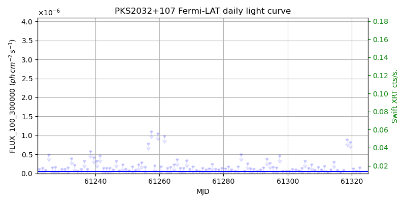
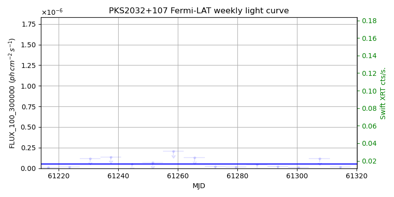
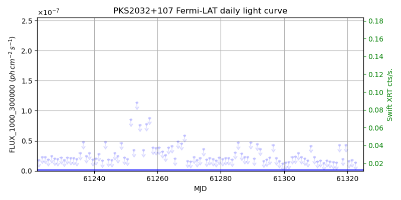
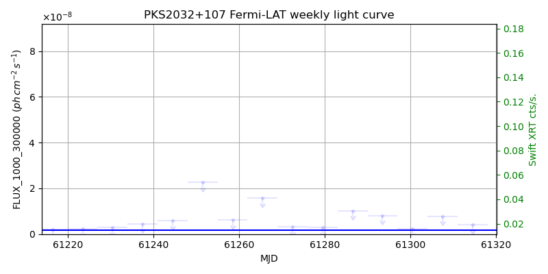

LAT Lightcurve site: https://fermi.gsfc.nasa.gov/ssc/data/access/lat/msl_lc/source/PKS_2032p107
Swift site: https://www.swift.psu.edu/monitoring/source.php?source=PKS2032+107
NED: Query
Time of last update of this page: UT: 2026-10-10 15:28 (MJD: 61323.645)
| Property | Value |
|---|---|
| R.A. | 20:35:22.32 |
| Dec. | 10:56:06.0 |
| z | 0.601 |
| 3FGL SpectrumType | PowerLaw |
| 3FGL PL Index | 2.47 |
| 3FGL Flux_100_300000 | 5.18e-08 1 / (s cm2) |
| 3FGL Flux_1000_300000 | 1.76e-09 1 / (s cm2) |
| 3FGL Flux >200 GeV | 7.38e-13 1 / (s cm2) |
| 3FGL Extrap. Crab >200 GeV | 0.00 |
| 3FGL Flux After EBL Absorption >200GeV | 7.49e-14 1 / (s cm2) |
| 3FGL EBL Crab Fraction >200GeV | 0.00 |

| MJD | dMJD | Flux | dFlux | Frac3FGL | FracCrab>200GeV | EBLFracCrab>200GeV |
|---|---|---|---|---|---|---|
| 61318.50 | 0.50 | 8.87e-07 | 0.00e+00 | 0.00 | 0.00 | 0.00 |
| 61319.50 | 0.50 | 8.31e-07 | 0.00e+00 | 0.00 | 0.00 | 0.00 |
| 61320.50 | 0.50 | 1.30e-07 | 0.00e+00 | 0.00 | 0.00 | 0.00 |
| 61321.50 | 0.50 | 6.25e-08 | 0.00e+00 | 0.00 | 0.00 | 0.00 |
| 61322.50 | 0.50 | 1.63e-07 | 0.00e+00 | 0.00 | 0.00 | 0.00 |

| MJD | dMJD | Flux | dFlux | Frac3FGL | FracCrab>200GeV | EBLFracCrab>200GeV |
|---|---|---|---|---|---|---|
| 61286.50 | 3.50 | 4.73e-08 | 0.00e+00 | 0.00 | 0.00 | 0.00 |
| 61293.50 | 3.50 | 2.23e-08 | 0.00e+00 | 0.00 | 0.00 | 0.00 |
| 61300.50 | 3.50 | 1.19e-08 | 0.00e+00 | 0.00 | 0.00 | 0.00 |
| 61307.50 | 3.50 | 1.17e-07 | 0.00e+00 | 0.00 | 0.00 | 0.00 |
| 61314.50 | 3.50 | 1.76e-08 | 0.00e+00 | 0.00 | 0.00 | 0.00 |

| MJD | dMJD | Flux | dFlux | Frac3FGL | FracCrab>200GeV | EBLFracCrab>200GeV |
|---|---|---|---|---|---|---|
| 61318.50 | 0.50 | 2.00e-08 | 0.00e+00 | 0.00 | 0.00 | 0.00 |
| 61319.50 | 0.50 | 4.29e-08 | 0.00e+00 | 0.00 | 0.00 | 0.00 |
| 61320.50 | 0.50 | 1.63e-08 | 0.00e+00 | 0.00 | 0.00 | 0.00 |
| 61321.50 | 0.50 | 1.77e-08 | 0.00e+00 | 0.00 | 0.00 | 0.00 |
| 61322.50 | 0.50 | 1.38e-08 | 0.00e+00 | 0.00 | 0.00 | 0.00 |

| MJD | dMJD | Flux | dFlux | Frac3FGL | FracCrab>200GeV | EBLFracCrab>200GeV |
|---|---|---|---|---|---|---|
| 61286.50 | 3.50 | 1.02e-08 | 0.00e+00 | 0.00 | 0.00 | 0.00 |
| 61293.50 | 3.50 | 8.11e-09 | 0.00e+00 | 0.00 | 0.00 | 0.00 |
| 61300.50 | 3.50 | 2.39e-09 | 0.00e+00 | 0.00 | 0.00 | 0.00 |
| 61307.50 | 3.50 | 7.78e-09 | 0.00e+00 | 0.00 | 0.00 | 0.00 |
| 61314.50 | 3.50 | 4.02e-09 | 0.00e+00 | 0.00 | 0.00 | 0.00 |
--------------------------------------------------------- Using user-supplied coords: 20:35:22.32 10:56:06.0 2000 --------------------------------------------------------- FLWO UT night of: 2026-10-11 Local Sid. @ Midnight: 00:55 Sunset (-15.0) (local, UT): 19:04 02:04 Sunrise (-15.0) (local, UT): 05:18 12:18 Moonrise (local, UT): Moonset (local, UT): Moon phase: 0.01 --------------------------------------------------------- AzTime LSID UT Obj_el Obj_az Mn_el Mn_az Sep. --------------------------------------------------------- 19:04 19:58 02:04 67.6 155.1 -16.1 264.2 112.1 19:34 20:29 02:34 69.3 174.7 -22.3 267.8 111.8 20:04 20:59 03:04 68.7 195.3 -28.5 271.5 111.6 20:34 21:29 03:34 66.1 213.3 -34.7 275.4 111.3 21:04 21:59 04:04 61.9 227.3 -40.8 279.7 111.0 21:34 22:29 04:34 56.8 237.8 -46.8 284.6 110.7 22:04 22:59 05:04 51.2 245.9 -52.7 290.5 110.4 22:34 23:29 05:34 45.2 252.4 -58.4 297.7 110.1 23:04 23:59 06:04 39.0 257.9 -63.6 307.3 109.8 23:34 00:29 06:34 32.7 262.6 -68.1 320.3 109.5 00:04 00:59 07:04 26.3 266.9 -71.3 338.2 109.1 00:34 01:29 07:34 19.9 270.9 -72.6 0.4 108.8 01:04 01:59 08:04 13.6 274.8 -71.5 22.7 108.5 01:34 02:30 08:34 7.3 278.6 -68.3 40.8 108.1 02:04 03:00 09:04 1.2 282.4 -63.9 54.1 107.8 02:34 03:30 09:34 -4.9 286.5 -58.7 63.8 107.5 03:04 04:00 10:04 -11.4 290.7 -53.1 71.2 107.2 03:34 04:30 10:34 -17.3 295.3 -47.3 77.2 106.9 04:04 05:00 11:04 -22.9 300.4 -41.4 82.2 106.6 04:34 05:30 11:34 -28.3 306.0 -35.3 86.6 106.3 05:04 06:00 12:04 -33.3 312.4 -29.2 90.6 106.0 05:18 06:14 12:18 -35.3 315.5 -26.5 92.4 105.9 --------------------------------------------------------- Dark hours >55 deg.: 2.66 srcstart (UT): 2026-10-11 02:04 srcend (UT): 2026-10-11 04:43